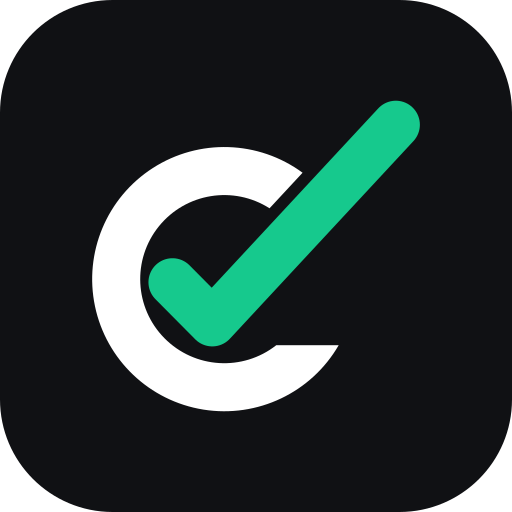

Variantes
Una sola letra en todas partes
Logo completo
logo-full.svg
Sobre oscuro
logo-white.svg
La C sola
logo-mark-oscuro.svg
Ícono de app

logo-icon.svgPequeño
logo-wordmark.svg
Favicon
favicon.svg
16×16 px, trazo engrosado
La C sobre claro
logo-mark.svg
Completo sobre oscuro
 logo-full-oscuro.svg
logo-full-oscuro.svg
Una tinta
logo-black.svg